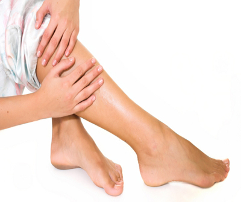

Dry skin on feet

1. Combine a spoonful of olive oil with a few drops of lemon juice and a few drops of lavender oil.
2. Shake well till the oil becomes thick and creamy. Apply on feet and leave it on for an hour at least.
3. Apply vegetable oil on the feet and wear a pair of socks. This can be kept on overnight for best benefit.
4. Petroleum jelly is very popularly used for dry feet. Apply a thick layer at bed time and cover with cotton socks; repeat on a regular basis to keep the feet soft and smooth.